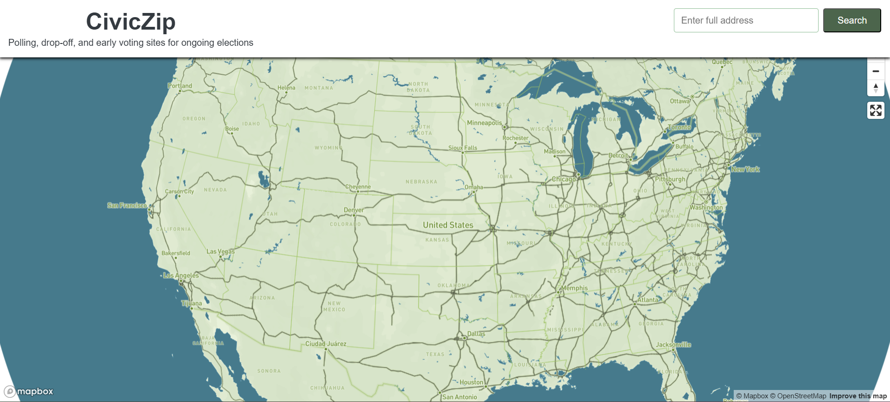
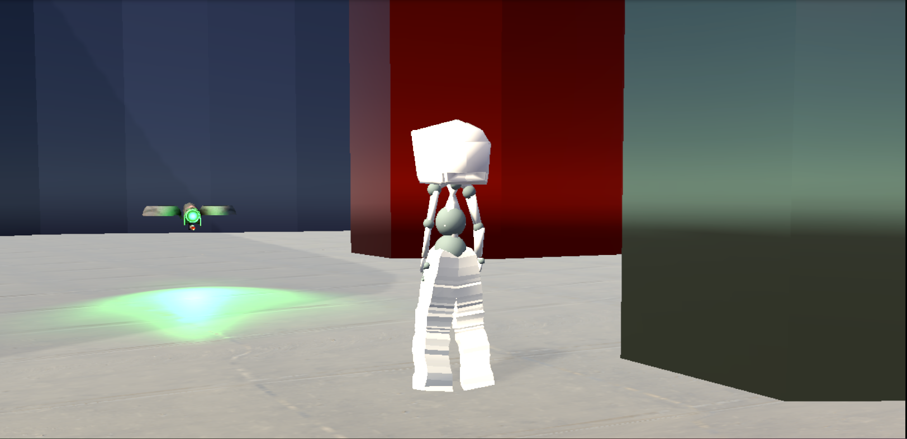

Welcome!
I'm Robert and I'm a Software Developer with a Bachelor's in Computer Science.
My LinkedIn My ResumeI'm Robert and I'm a Software Developer with a Bachelor's in Computer Science.
My LinkedIn My ResumeI'm a recent Computer Science grad with experience in Python, AI model training, and research. I currently work as an AI Coding Trainer at Data Annotation, where I verify AI-generated code and test the productivity of various features. I also work as a Research Assistant at UO, where I create VR environments in Unity for neuropsychology research. I'm seeking software engineering roles where I can grow as a developer, and am a dedicated learner.


CivicZip is an interactive map that shows local ballot locations. By inserting your address, you instantly are shown multiple points on the map for you to complete your civic duty!
WRIF is a 3D Unity Platform Puzzle game where it takes fast reflexes and sharp wits to progress. Take on the streets of WRIF and become the revolution.